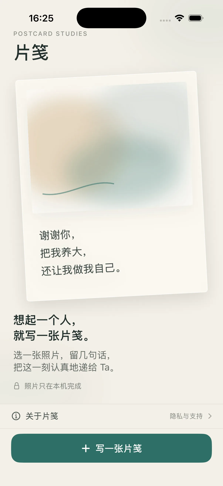
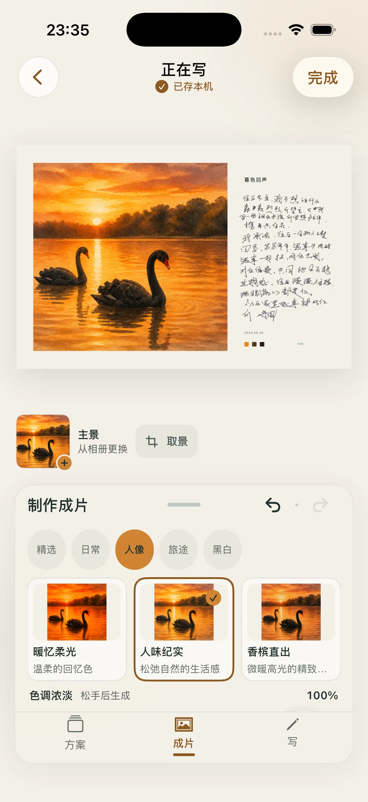
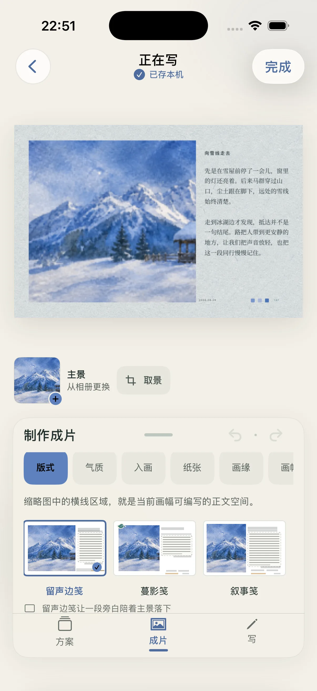
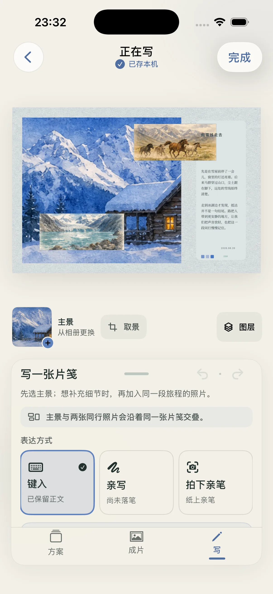
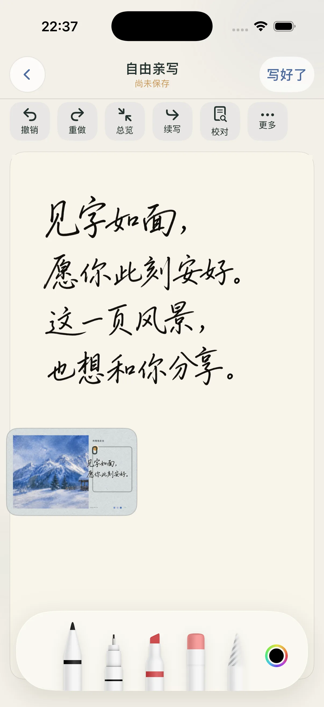
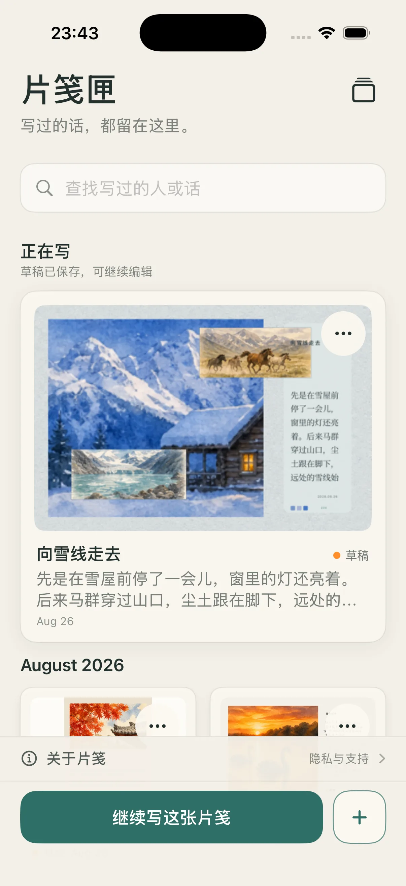

照片与草稿
你主动选择照片；编辑、笔迹、寄语和草稿默认在设备上处理。保存到系统相册或通过系统分享，都由你主动发起。

先看到你要递出的那一张
画面、纸张、笔迹和留白都围绕同一件事：让这张片笺看起来像你真的想写给某个人。
成片先被看见
片笺从结果开始。先看见它会成为怎样的一页，再慢慢把它写完。

从想起，到写好
从你主动挑选的照片或 Live Photo 开始。
用版式、画面、纸张和画缘，找到这张片笺的样子。
键入、亲写，或拍下已经写好的亲笔。
在最后确认后，由你决定如何交付这张数字明信片。


笔迹不需要被替代
一笔一画，留在这张片笺里。你也可以拍下纸上的亲笔，把已经写好的那句话继续带上。


片笺集
浏览已完成的片笺，遇见适合此刻的起点。它们不是参数和素材清单，而是一张张可以继续写下去的完整作品。
你的内容，由你决定去向
你主动选择照片；编辑、笔迹、寄语和草稿默认在设备上处理。保存到系统相册或通过系统分享，都由你主动发起。
只有在你确认后，当前主景的处理副本才会用于这一次 AI 生成。它是可选在线功能，不影响普通创作。